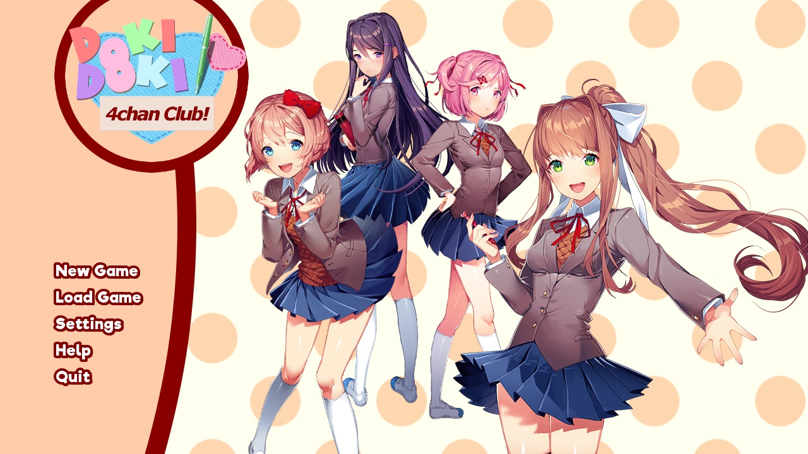

The Internet is Serious Business!
Home > Doki Doki 4chan Club!

Doki Doki 4chan Club! is a mod of mine for the visual novel Doki Doki Literature Club!. It is a heavily modified Act 1 of Doki Doki Literature Club! in which, rather than joining a literature club, the protagonist instead joins a club for 4chan. It is something of a comedy mod, though there is definitely much more to it than that.
The entire thing is one big shitpost, and should not be taken seriously. It is not suitable for Redditors, or those who are easily offended. (I also apologize if Monika talks too much.)
Screenshots:
I have also made available the mod's source files (ZIP, 51.1MB) for those who are interested.


 All written materials on this Web site are my own, and all are released under the Do What the Fuck You Want to Public License Version 2.
All written materials on this Web site are my own, and all are released under the Do What the Fuck You Want to Public License Version 2.
This page last modified on 25 March 2021.
{kind=link}
{kind=link}
{kind=link}
{kind=link}
{kind=link}